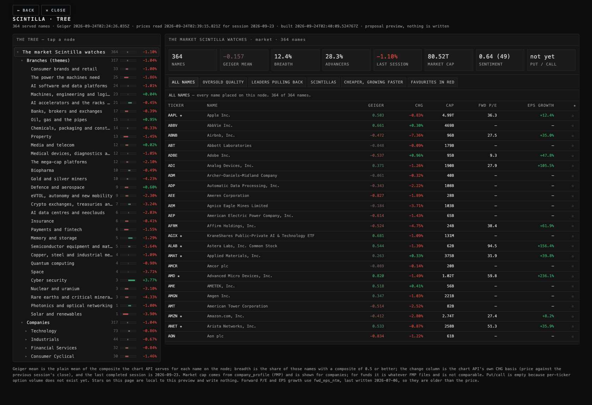
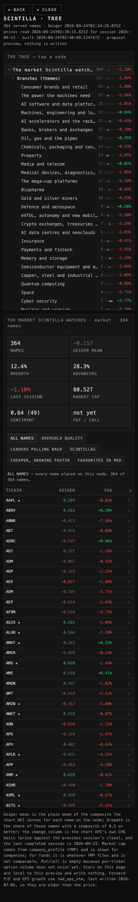

A proposal, built 2026-09-24 02:40 UTC · nothing on the live Hub was changed, nothing was deployed, no table was written.
Alan asked for one way to look at the market that runs from the whole thing down to a single name, with his cohorts as the seed of the themes rather than the structure itself. This is that shape, built from the 364 names Scintilla actually serves, with a page you can click through. It is a proposal: the cohorts, the board, the Geiger weights and every existing screen are untouched.
Four levels, then a second view of the same companies grouped by theme:
company_profile.Every served name is placed, and no name is left over. The rules live in one editable file
(data/taxonomy-rules-20260924.json): a branch can list tickers, name one of Alan's cohorts as its seed, or match an
industry, and the most specific branch wins. Adding a name to a branch is one line in that file.
Themes cut across sectors — the power a data centre needs is a utility, an industrial and an engineering firm at once. If a branch hung under one industry, that branch could only ever hold part of its theme. So a company keeps its sector and industry address and sits on exactly one branch. That is decision 1 below.
| BRANCH | NAMES | GEIGER MEAN | BREADTH | LAST SESSION | CAP | WHO IS ON IT |
|---|---|---|---|---|---|---|
| Consumer brands and retail | 33 | -0.336 | 0.0% | -1.00% | 4.54T | BYND CL COST DKNG DPZ F GM HD HLT … |
| The power the machines need | 25 | -0.530 | 8.0% | -1.86% | 1.71T | AEE AEP AME ATO BE CEG D DTE DUK … |
| AI software and data platforms | 24 | -0.071 | 16.7% | -1.01% | 15.02T | ADBE ADP APP CDNS CRM DDOG GOOG GOOGL IBM … |
| Machines, engineering and logistics | 23 | -0.067 | 8.7% | +0.04% | 2.20T | ADM CAT CMI CSX CTAS DAL DE EMR FAST … |
| AI accelerators and the racks they sit in | 21 | +0.450 | 52.4% | -0.45% | 13.72T | ADI ALAB AMD ANET APH ARM AVGO CBRS CRDO … |
| Banks, brokers and exchanges | 17 | -0.424 | 0.0% | -0.39% | 3.63T | BAC BLK BNY BX C CME GS ICE JPM … |
| Oil, gas and the pipes | 15 | -0.044 | 0.0% | +0.95% | 2.13T | BKR COP CVX DVN EOG KMI MPC OKE OXY … |
| Chemicals, packaging and construction materials | 14 | -0.153 | 0.0% | -0.33% | 810B | AMCR APD CRH CTVA DOW ECL JCI LIN MLM … |
| Property | 13 | -0.609 | 0.0% | -1.45% | 771B | AMT CBRE CCI EXR IRM O PLD PSA SBAC … |
| Media and telecom | 12 | -0.359 | 8.3% | +0.02% | 1.43T | BIDU CHTR CMCSA CSCO DIS FOXA LYV OMC T … |
| Medical devices, diagnostics and health services | 12 | -0.109 | 16.7% | -1.05% | 1.66T | ABT BSX CVS DHR ELV HIMS ISRG MCK MDT … |
| The mega-cap platforms | 12 | -0.241 | 16.7% | -2.10% | 10.58T | AAPL ABNB AMZN BABA BKNG DASH MELI META PDD … |
| Biopharma | 10 | +0.272 | 30.0% | -0.49% | 3.50T | ABBV AMGN BMY GILD JNJ LLY MRK PFE REGN … |
| Gold and silver miners | 10 | -0.193 | 0.0% | -4.23% | 523B | AEM AU CDE FNV HL KGC NEM PAAS RGLD … |
| Defence and aerospace | 9 | -0.452 | 0.0% | +0.60% | 1.23T | BA GD GE HWM LHX LMT NOC RTX TDG |
| eVTOL, autonomy and new mobility | 9 | -0.355 | 11.1% | -2.30% | 1.54T | AUR EH EVTL JOBY LCID LI NIO QS TSLA |
| Crypto exchanges, treasuries and miners | 7 | +0.321 | 28.6% | -3.24% | 260B | CIFR COIN CORZ HOOD IREN MSTR WULF |
| AI data centres and neoclouds | 6 | +0.069 | 16.7% | -2.03% | 312B | APLD CRWV DLR EQIX NBIS SMCI |
| Insurance | 6 | -0.397 | 0.0% | -0.41% | 1.55T | AON BRK-B CB MRSH PGR TRV |
| Payments and fintech | 6 | -0.523 | 0.0% | -1.55% | 1.54T | AFRM AXP COF MA SOFI V |
| Memory and storage | 5 | +0.541 | 80.0% | -1.29% | 1.89T | MU SIMO SNDK STX WDC |
| Semiconductor equipment and materials | 5 | +0.261 | 0.0% | -1.64% | 1.69T | AMAT ASML AXTI KLAC LRCX |
| Copper, steel and industrial metals | 4 | +0.052 | 0.0% | -1.09% | 368B | FCX NUE SCCO STLD |
| Quantum computing | 4 | -0.026 | 0.0% | -0.98% | 29B | IONQ QBTS QUBT RGTI |
| Space | 4 | -0.031 | 0.0% | -3.71% | 2.11T | ASTS ONDS RKLB SPCX |
| Rare earths and critical minerals | 3 | -0.399 | 0.0% | -4.33% | 12B | LAC MP USAR |
| Cyber security | 3 | +0.845 | 100.0% | +3.77% | 594B | CRWD PANW ZS |
| Nuclear and uranium | 3 | -0.446 | 0.0% | -3.10% | 51B | CCJ OKLO SMR |
| Photonics and optical networking | 1 | +0.385 | 0.0% | -1.00% | 74B | LITE |
| Solar and renewables | 1 | -0.686 | 0.0% | -3.90% | 22B | FSLR |
Geiger mean is the plain mean of the composite the chart API serves for each name on the node. Breadth is the share of those names with a composite of 0.5 or better. Last session is the chart API's own CHG basis for 2026-09-23.
| SECTOR | NAMES | GEIGER MEAN | BREADTH | CAP |
|---|---|---|---|---|
| Technology | 73 | +0.236 | 34.2% | 29.88T |
| Industrials | 44 | -0.130 | 9.1% | 6.24T |
| Financial Services | 32 | -0.365 | 3.1% | 6.90T |
| Consumer Cyclical | 30 | -0.387 | 3.3% | 6.49T |
| Basic Materials | 28 | -0.200 | 0.0% | 1.65T |
| Healthcare | 22 | +0.065 | 22.7% | 5.16T |
| Utilities | 20 | -0.744 | 0.0% | 1.06T |
| Communication Services | 18 | -0.292 | 11.1% | 11.87T |
| Consumer Defensive | 18 | -0.220 | 0.0% | 3.13T |
| Energy | 17 | -0.111 | 0.0% | 2.19T |
| Real Estate | 15 | -0.554 | 0.0% | 945B |
Measured against the S&P 500's own membership list (501 rows, an external reference — Wikipedia's component table, read 2026-09-24 — and not used for any number on a live screen).
| SECTOR (as FMP files it) | GICS NAME | HUB NAMES | SHARE OF HUB CAP | S&P 500 MEMBERS | SHARE OF THE INDEX | HUB HAS | COVER |
|---|---|---|---|---|---|---|---|
| Technology | Information Technology | 73 | 39.6% | 74 | 14.8% | 42 | 57% |
| Communication Services | Communication Services | 18 | 15.7% | 23 | 4.6% | 15 | 65% |
| Financial Services | Financials | 32 | 9.1% | 75 | 15.0% | 28 | 37% |
| Consumer Cyclical | Consumer Discretionary | 30 | 8.6% | 47 | 9.4% | 21 | 45% |
| Industrials | Industrials | 44 | 8.3% | 82 | 16.4% | 37 | 45% |
| Healthcare | Health Care | 22 | 6.8% | 60 | 12.0% | 21 | 35% |
| Consumer Defensive | Consumer Staples | 18 | 4.1% | 31 | 6.2% | 17 | 55% |
| Energy | Energy | 17 | 2.9% | 21 | 4.2% | 16 | 76% |
| Basic Materials | Materials | 28 | 2.2% | 25 | 5.0% | 15 | 60% |
| Utilities | Utilities | 20 | 1.4% | 31 | 6.2% | 19 | 61% |
| Real Estate | Real Estate | 15 | 1.2% | 30 | 6.0% | 15 | 50% |
What this says. By weight the Hub is a technology portfolio: Technology alone is 40% of the Hub's market cap against 15% of the index by member count. Financial Services, Health Care and Real Estate are the thin ends — the Hub serves 35% of the index's health-care names and 37% of its financials. That is not necessarily wrong — it is what Alan watches — but it means a "market" reading taken over the Hub is a reading of a tech-heavy book, and the tree now says so on every node.
Thin branches (four names or fewer, so their aggregate is close to meaningless): Copper, steel and industrial metals (4), Quantum computing (4), Space (4), Rare earths and critical minerals (3), Cyber security (3), Nuclear and uranium (3), Photonics and optical networking (1), Solar and renewables (1).
| GICS SECTOR | SUB-INDUSTRY | S&P MEMBERS | NAMES |
|---|---|---|---|
| Financials | Regional Banks | 6 | CFG FITB HBAN KEY MTB RF |
| Financials | Life & Health Insurance | 5 | AFL GL MET PFG PRU |
| Real Estate | Multi-Family Residential REITs | 5 | CPT ESS MAA UDR VMRK |
| Consumer Discretionary | Homebuilding | 4 | DHI LEN NVR PHM |
| Information Technology | Electronic Equipment & Instruments | 4 | KEYS ROP TDY ZBRA |
| Consumer Discretionary | Casinos & Gaming | 3 | LVS MGM WYNN |
| Financials | Multi-line Insurance | 3 | AIG AIZ L |
| Health Care | Health Care Supplies | 3 | ALGN COO WST |
| Industrials | Cargo Ground Transportation | 3 | FDXF JBHT ODFL |
| Information Technology | Internet Services & Infrastructure | 3 | AKAM GDDY VRSN |
One parse artefact to ignore in that list: FDXF is FDX. The Nasdaq-100 comparison is not in this document —
the estate's index_constituents table is empty and the public source returned 403. It needs the FMP constituent
list, and then this table can be re-run.
The 34 candidates already collected (Alan's CLAUDE CHECK folder), plus IGV and NVTS from lane M33, each given a place on the tree rather than only a cohort. The chart API cannot price any of them today: adding one is a universe change the coordinator has to make (universe file, digest, redeploy), which is why this is a list and not a migration.
| TICKER | MENTIONS | BRANCH IT WOULD JOIN | WHY |
|---|---|---|---|
| AAOI | 4 | Photonics and optical networking | optical transceivers — sits beside LITE and CRDO |
| PL | 3 | Space | satellite imagery — beside ASTS and RKLB |
| BKSY | 2 | Space | satellite imagery — beside PL and RDW |
| COHR | 2 | Photonics and optical networking | photonics components — beside LITE |
| CRML | 2 | Rare earths and critical minerals | critical minerals — beside MP and USAR |
| LUNR | 2 | Space | lunar landers — beside RKLB and ASTS |
| RDW | 2 | Space | space infrastructure |
| TSEM | 2 | Semiconductor equipment and materials | specialty foundry — beside TSM |
| UUUU | 2 | Nuclear and uranium | uranium and rare earths — beside CCJ |
| ACHR | 1 | eVTOL, autonomy and new mobility | eVTOL — beside JOBY |
| ALB | 1 | Rare earths and critical minerals | lithium — beside the other materials names |
| AMKR | 1 | Semiconductor equipment and materials | chip packaging — beside AMAT/KLAC |
| AVAV | 1 | Defence and aerospace | defence drones |
| BTDR | 1 | Crypto exchanges, treasuries and miners | bitcoin miner — beside COIN in CRYPTO |
| CLSK | 1 | Crypto exchanges, treasuries and miners | bitcoin miner — beside COIN in CRYPTO |
| GLW | 1 | Photonics and optical networking | optical fibre and glass for data centres |
| HIVE | 1 | Crypto exchanges, treasuries and miners | bitcoin miner — beside COIN in CRYPTO |
| HUBB | 1 | The power the machines need | grid equipment — beside PWR |
| KTOS | 1 | Defence and aerospace | defence drones |
| NOK | 1 | Media and telecom | optical transport for data-centre interconnect |
| NVTS | 1 | AI accelerators and the racks they sit in | power semiconductors — beside ADI/ALAB |
| OUST | 1 | eVTOL, autonomy and new mobility | lidar sensors — sits with the other hardware bets in THEMATIC |
| RIOT | 1 | Crypto exchanges, treasuries and miners | bitcoin miner — beside COIN in CRYPTO |
| SATL | 1 | Space | satellite operator — beside the other space names |
| SERV | 1 | eVTOL, autonomy and new mobility | delivery robots |
| SIDU | 1 | Space | space services — beside the other space names |
| SIVE | 1 | needs a profile before it can be placed | photonics, named beside AXTI and LITE |
| SPIR | 1 | Space | space weather and ship-tracking data |
| SQM | 1 | Rare earths and critical minerals | lithium — beside the other materials names |
| STM | 1 | AI accelerators and the racks they sit in | European semiconductor — beside ADI |
| SYM | 1 | Machines, engineering and logistics | warehouse robotics — the robotics leg of THEMATIC |
| TECK | 1 | Copper, steel and industrial metals | copper — beside SCCO and FCX |
| TMRC | 1 | Rare earths and critical minerals | rare earth exploration |
| VSH | 1 | AI accelerators and the racks they sit in | discrete components |
Read against section 2, the candidates land almost entirely on the branches that are already thin — photonics, space, critical minerals, uranium. They would fix the thin themes, not the thin sectors. If the aim is a representative Hub rather than a richer set of themes, the names to add are the large financials, insurers and health-care names in the gap table above.
| WHAT IS WRONG | HOW MANY | THE FIX | WHY IT MATTERS |
|---|---|---|---|
| Two spellings of one cohort: MEGACAP (12 rows) and MEGA_CAP (62 rows) | 2 | keep MEGA_CAP, move MEGACAP's rows, drop the empty label | the two are not the same list — BA sits only in MEGACAP, and 51 names sit only in MEGA_CAP. A screen filtered on one silently drops the other's names. |
| Cohort rows for names the Hub cannot price | 22 | either add them to the served universe or park them in the candidate table | every crypto and macro row — ADAUSD AVAXUSD BTCUSD CLUSD DOGEUSD DXUSD ESUSD ETHUSD and the rest — points at a ticker the chart API does not serve, so any aggregate over CRYPTO or MACRO is computed over nothing. |
| Machine-made industry cohorts | 47 | stop writing the FMP industry string as a cohort; the tree's industry level already holds it | 113 cohort labels for 364 names. Most were never chosen by anyone — they are the industry text with the spaces replaced. |
| Cohorts holding one served name or none | 31 | fold each into the branch that already holds the name | a group of one cannot be compared with anything. |
| Two cohort engines that disagree | 22 | make cohorts a view over ticker_cohorts, or move the board onto the tree |
the board reads cohorts (389 rows, one label per name) while the newer engine writes ticker_cohorts (1280 rows, many labels per name). The same name can be in different groups on different screens. |
| A cohort that contradicts the name's business | 10 | let the branch rule place the name and keep the cohort as Alan's own list | AI_HARDWARE currently holds a cyber-security name, three bitcoin miners and four ETFs, so an "AI hardware" reading is not one. |
| TICKER | COHORT | WHERE THE TREE PUTS IT | WHAT FMP SAYS IT DOES |
|---|---|---|---|
| AGIX | AI_HARDWARE | None | Asset Management |
| CIFR | AI_HARDWARE | CRYPTO_EQUITIES | Information Technology Services |
| CORZ | AI_HARDWARE | CRYPTO_EQUITIES | Software - Infrastructure |
| CRWD | AI_HARDWARE | CYBER | Software - Infrastructure |
| DRAM | AI_HARDWARE | None | Asset Management |
| ETN | AI_HARDWARE | AI_POWER | Electrical Equipment & Parts |
| IREN | AI_HARDWARE | CRYPTO_EQUITIES | Information Technology Services |
| SMH | AI_HARDWARE | None | Asset Management |
| SOXX | AI_HARDWARE | None | Asset Management |
| WULF | AI_HARDWARE | CRYPTO_EQUITIES | Financial - Capital Markets |
"None" means the name is a fund, so it sits on the fund trunk rather than on a branch.
Alan: "I don't want to have to make watch lists. I want some dynamism." So a list here is a rule, not a saved set of tickers. It is evaluated over whichever node is open — the whole market, one sector, one branch — every time the numbers change. Nothing to maintain, nothing to go stale. Alan stars or swipes; the list rebuilds itself.
| LIST | THE RULE | WHAT IT IS FOR |
|---|---|---|
| Oversold quality | market cap of $20B or more and a Geiger composite of −0.35 or worse, weakest first | big names the machine reads as beaten down. Size is standing in for quality until the fundamentals join the tree — that is the one honest weakness in this rule. |
| Leaders pulling back | Geiger trend of +0.25 or better while the last completed session closed down | strength that gave a little back, which is the shape Alan described as a pullback to support. |
| Scintillas | moved 3% or more in the last completed session, biggest move first | the fast movers, on whichever node is open — the whole market, one sector, or one branch. |
| Cheaper, growing faster | forward P/E below the open node's median and forward EPS growth above it | cheap against its actual peers, not against the whole market. It needs four names on the node carrying both numbers, otherwise it says so and shows nothing. |
| Favourites in red | a name in hub_favorites that closed down | the 72 names already starred, filtered to the ones having a bad day. |
All five run in the prototype today. Each names its own rule on screen and says how many of the node's names met it, so a list that finds nothing says "no name on this node meets the rule" instead of showing an empty box.
Open deliverables/20260924/tree/prototype.html. Tap a node in the tree on the left; the right side shows that
node's readings, then its names and the five lists. The star on each row is local to the preview and writes nothing.
1680 wide

390 wide (phone)

/universe: 364 names, digest ab8f7965258d…./geiger, computed 2026-09-24T02:24:26.035Z. All 364 names carry a composite today./quotes, read 2026-09-24T02:39:15.821Z, session 2026-09-23. The change is the API's own CHG basis: price against the close of the session before.company_profile (FMP).ticker_cohorts (1280 rows) and cohorts (389 rows).social_sentiment; only 49 of 364 names have a score, so the sentiment tile is a reading of a small sample and says how many.fwd_eps_ntm, last written 2026-07-06, and fundamentals.eps_ttm. These are months older than the price, which is why that list is the weakest of the five.hub_favorites (72 names).Three additive tables, written as a migration and not applied:
taxonomy_nodes, taxonomy_membership, taxonomy_list_rules, in
supabase/migrations/20260924_taxonomy_tree.sql, with the seed rows generated alongside it. The rollback is three
drop table lines at the foot of the same file. Nothing existing is changed and no screen reads them until a reviewed
reader ships.
The migration deliberately stores no Geiger value, breadth number or price. Those come from the chart API when a node is opened; copied into a table they would be wrong within the hour.
Built by scripts/build-taxonomy.py, scripts/taxonomy-audit.py and scripts/build-tree-deliverable.py from live reads at 2026-09-24 02:40:09 UTC.